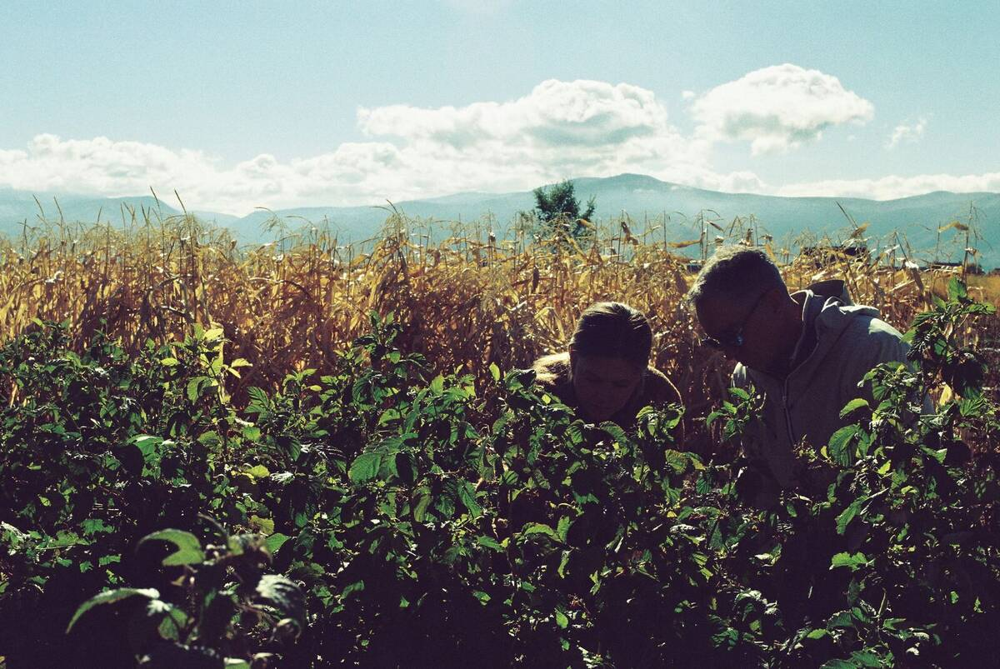

Support
Leaders
The people behind the welcome, care, and connection
Support Leader Handbook · 2026–2027
© 2026 Southeast Students. All Rights Reserved.
No portion of this book may be reproduced in any form
without permission from the publisher, except as permitted by U.S. copyright law.
For permissions contact: Justin Davis at jdavis@secc.org
Contents
Welcome, Support Leader
We are so glad you are here! Every week, students walk into our ministries carrying different stories, questions, worries, and hopes. Some are excited to be here. Some are giving church a chance for the very first time. All of them matter to God.
Before a student ever joins a group or hears a message, someone opens a door, learns a name, helps them find their place, notices a need, protects the environment or prays for what God might do. That someone might be you.
Your faithfulness helps create the kind of environment where students can encounter Jesus and build relationships that last. You are part of one Student Ministry team. We are so grateful for you, and we want you to feel confident about why we serve, what your role makes possible and how to serve well.
Your Student Ministry Team
The
Mission
Why We Exist
and to one another.
Every part of Southeast Students exists to support that mission. It is rooted in the Great Commandment and the Great Commission: love God, love people, and make disciples.
Group Leaders live out this mission by building consistent relationships and discipling students. Support Leaders live it out by helping students feel welcomed, connected, safe and cared for. Different assignments. Same mission.
Four Questions
Four questions for every leader:
The Heart Behind Support
In 1 Corinthians 12, Paul describes one body with many parts. No part gets all the attention; every part matters.
The person leading a group and the person running check-in have different responsibilities, but both can help one student take a step closer to Jesus.
Your
Role
Three Wins
You may never teach a lesson or lead a small group. But the way you serve can shape whether a student feels comfortable enough to stay, connected enough to return and supported enough to take a next step.
Where You Serve
Impressions
- Check-In: Help students and families navigate the approved check-in process and get where they need to go.
- Connections: Look for new or disconnected students and help them connect with a Group Leader, staff member, or next step.
- Snack Bar: Offer warm, orderly hospitality through food and conversation while following campus procedures.
- Help maintain an attentive, welcoming environment through the assigned safety role, established procedures, and close communication with staff and designated security personnel.
Team
- Pray intentionally for students, leaders, families, staff and the movement of God. Be available to pray with people when appropriate and connect significant care needs to ministry staff.
Serving
Well
What We Ask
The Rhythm of a Ministry Night
Check-In
- Offer a genuine greeting. A calm, friendly welcome matters even when the line is long.
- Learn and follow the campus-approved check-in and attendance process; do not create unofficial shortcuts.
- Help new students know where to go next. When unsure, connect them with the designated Team Leader or Connections Leader.
- Protect student and family information. Keep screens, printed lists and conversations appropriately private.
- If a registration, pickup, attendance or access issue does not seem right, involve the designated Team Leader or staff member instead of guessing.
Connections
- Look for the first-time student, the student standing alone or the parent who seems unsure.
- Introduce yourself, learn names and ask simple questions before giving directions.
- Help students make a real connection with the appropriate Group Leader or Team Leader, rather than just pointing down a hallway.
- Pay attention to students who have visited before but still seem disconnected.
- Share relevant follow-up needs with the Team Leader through the approved process; do not independently collect or distribute student contact information.
Snack Bar
- Prepare, serve, handle payments if applicable and clean up according to your campus’s procedures.
- Be warm and attentive; a short interaction can make a student feel known.
- Keep stations clean and orderly and follow food safety procedures (wearing gloves while serving food, etc.).
- Look for opportunities to help rather than allow the station to become a distraction from students.
Security
- Know your assigned area, responsibilities, communication method, and reporting contact.
- Stay observant and approachable; pay attention to entrances, transitions and anything outside the usual pattern.
- Follow established campus and church security procedures. Do not invent your own response or investigate concerning situations independently.
- Communicate concerns promptly and discreetly to designated security personnel and/or ministry staff.
- During an emergency, follow the approved emergency plan and the direction of authorized responders.
Prayer Team
- Pray before, during, and after ministry for students, Group Leaders, Support Leaders, families, and staff.
- Pray specifically for students who are new, hurting, disconnected or exploring faith, using only information appropriately shared with your team.
- When someone requests prayer: listen with care, ask what they would like prayer for and pray simply and sincerely.
- Respect personal boundaries and ministry guidelines; do not pressure someone to share, respond, or accept physical contact.
- If a conversation raises a significant pastoral or safety concern, involve ministry staff rather than trying to carry it alone.
When the Unexpected Happens
Be the Teammate You Wish You Had
The
Team
One Ministry, Different Roles
Student Ministry is not made up of people working separate jobs. It is one team serving one mission. When we work together, students experience consistent care from the parking lot to the group room and back out the door.
Ministry Staff
- Equip volunteers, clarify ministry direction, make ministry decisions, coordinate follow-up, and provide pastoral leadership.
- Connect Support Leaders, Group Leaders, and campus teams when a situation requires additional care.
Leaders
- Build consistent relationships with students through group, biblical discussion, discipleship, and ongoing care.
Leaders
- Make space for ministry through hospitality, connection, prayer, and attentive service.
- Often notice needs first and help the right teammate respond.
& Partners
- Provide specialized oversight or responses according to the campus’s approved processes. Support Leaders serving in security coordinate with them rather than acting independently.
How a Great Handoff Works
The same principle applies to a concerned parent, a student requesting prayer, or a safety issue. Don’t leave someone with only a direction when you can offer an appropriate connection.
Further
Resources
A Simple Conversation Guide
Your Weekly Quick Check
- Have I confirmed when and where to serve?
- Do I know my role, team lead, and any updates?
- Have I prayed for the students coming tonight?
- Am I approachable, attentive, and present?
- Have I welcomed someone by name or helped someone connect?
- Have I communicated any concerns to the right person?
- Have I finished my station’s closing tasks?
- Have I communicated follow-up needs?
- Have I confirmed my next serving date?
Campus Quick Reference
Questions You May Have
A student’s story can change through one conversation, one welcome, one moment of feeling safe, one invitation into community, or one prayer. The moments that feel small to us may be the moments God uses in a big way.
Thank you for helping connect students to Jesus and to one another.
Notes